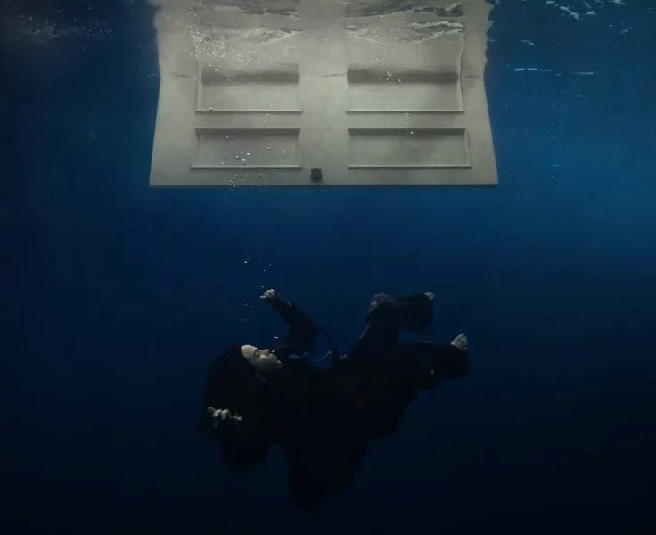
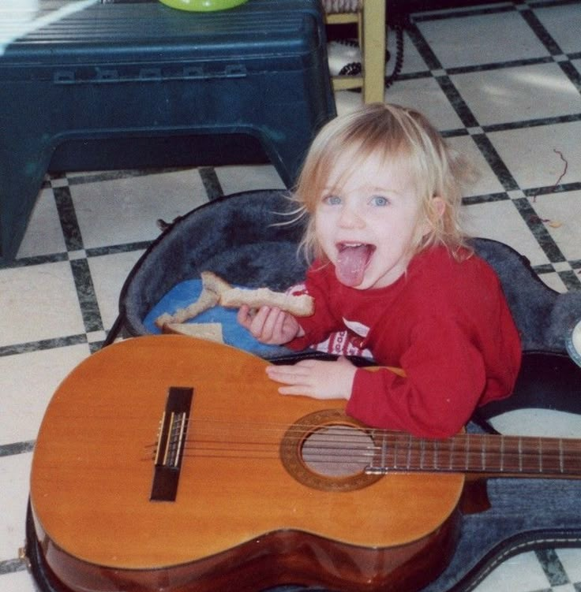
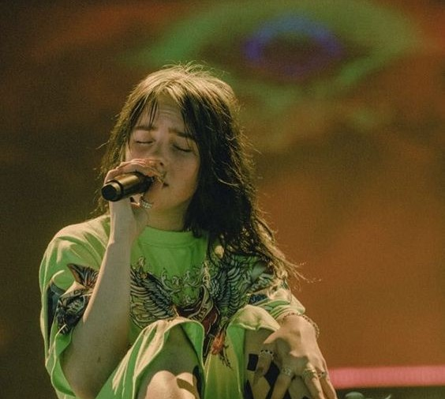

Billie Eilish Pirate Baird O'Connell, nacida en Los Ángeles en 2001, irrumpió en la escena musical mundial a los 14 años con su sencillo «Ocean Eyes», lanzado de manera independiente junto a su hermano y frecuente colaborador, Finneas O'Connell. Caracterizada por su estilo sonoro introspectivo, producciones electrónicas de atmósferas oscuras y un enfoque visual único que desafía las convenciones del pop tradicional, se convirtió en un fenómeno cultural sin precedentes. Con múltiples premios Grammy y dos premios Óscar a la Mejor Canción Original por sus aportaciones cinematográficas, Eilish ha consolidado su posición como una de las artistas más influyentes, vanguardistas y definitorias de su generación.
WHEN WE ALL FALL ASLEEP, WHERE DO WE GO?
Álbum (2019)
Happier Than Ever
Álbum (2021)

HIT ME HARD AND SOFT
Álbum (2024)
Billie Eilish creció en Highland Park, Los Ángeles, educada en casa junto a su hermano Finneas por padres artistas que fomentaron una libertad creativa total. Entre instrumentos y canciones improvisadas, se unió al Coro de Niños de Los Ángeles a los ocho años y volcó su infancia en la danza contemporánea. Sin embargo, a los 13 años sufrió una severa lesión de cadera que la obligó a abandonar el baile, redirigiendo toda su pasión hacia la composición musical.

Hizo historia al ganar las cuatro categorías principales de los Premios Grammy en una sola noche con solo 18 años. Además, ha ganado dos premios Óscar a la Mejor Canción Original por sus aportaciones en películas como Barbie y No Time to Die.
Revolucionó la cultura pop a través de su propuesta estética usando ropa holgada (oversize) y tonos de cabello icónicos como el verde neón con negro, redefiniendo la imagen de la música pop contemporánea.

Sus canciones abordan temas de salud mental, vulnerabilidad y emociones profundas con una honestidad única, conectando con millones de fans en todo el mundo.